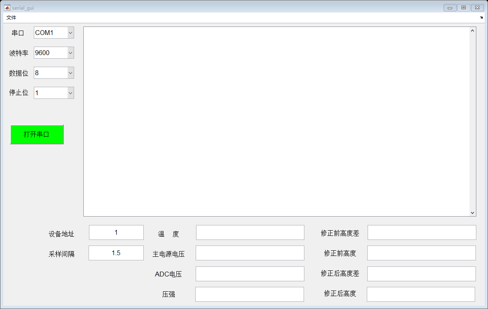

function varargout = serial_gui(varargin) % SERIAL_GUI MATLAB code for serial_gui.fig % SERIAL_GUI, by itself, creates a new SERIAL_GUI or raises the existing % singleton*. % % H = SERIAL_GUI returns the handle to a new SERIAL_GUI or the handle to % the existing singleton*. % % SERIAL_GUI('CALLBACK',hObject,eventData,handles,...) calls the local % function named CALLBACK in SERIAL_GUI.M with the given input arguments. % % SERIAL_GUI('Property','Value',...) creates a new SERIAL_GUI or raises the % existing singleton*. Starting from the left, property value pairs are % applied to the GUI before serial_gui_OpeningFcn gets called. An % unrecognized property name or invalid value makes property application % stop. All inputs are passed to serial_gui_OpeningFcn via varargin. % % *See GUI Options on GUIDE's Tools menu. Choose "GUI allows only one % instance to run (singleton)". % % See also: GUIDE, GUIDATA, GUIHANDLES % Edit the above text to modify the response to help serial_gui % Last Modified by GUIDE v2.5 25-Apr-2019 15:10:45 % Begin initialization code - DO NOT EDIT gui_Singleton = 1; gui_State = struct('gui_Name', mfilename, ... 'gui_Singleton', gui_Singleton, ... 'gui_OpeningFcn', @serial_gui_OpeningFcn, ... 'gui_OutputFcn', @serial_gui_OutputFcn, ... 'gui_LayoutFcn', [] , ... 'gui_Callback', []); if nargin && ischar(varargin{1}) gui_State.gui_Callback = str2func(varargin{1}); end if nargout [varargout{1:nargout}] = gui_mainfcn(gui_State, varargin{:}); else gui_mainfcn(gui_State, varargin{:}); end % End initialization code - DO NOT EDIT % --- Executes just before serial_gui is made visible. function serial_gui_OpeningFcn(hObject, eventdata, handles, varargin) % This function has no output args, see OutputFcn. % hObject handle to figure % eventdata reserved - to be defined in a future version of MATLAB % handles structure with handles and user data (see GUIDATA) % varargin command line arguments to serial_gui (see VARARGIN) % Choose default command line output for serial_gui handles.output = hObject; set(handles.pushbutton1,'backgroundcolor','g'); % Update handles structure guidata(hObject, handles); % UIWAIT makes serial_gui wait for user response (see UIRESUME) % uiwait(handles.figure1); % --- Outputs from this function are returned to the command line. function varargout = serial_gui_OutputFcn(hObject, eventdata, handles) % varargout cell array for returning output args (see VARARGOUT); % hObject handle to figure % eventdata reserved - to be defined in a future version of MATLAB % handles structure with handles and user data (see GUIDATA) % Get default command line output from handles structure varargout{1} = handles.output; % --- Executes on selection change in COM_Num. %com口选择框回调函数 function COM_Num_Callback(hObject, eventdata, handles) % hObject handle to COM_Num (see GCBO) % eventdata reserved - to be defined in a future version of MATLAB % handles structure with handles and user data (see GUIDATA) % Hints: contents = cellstr(get(hObject,'String')) returns COM_Num contents as cell array % contents{get(hObject,'Value')} returns selected item from COM_Num % --- Executes during object creation, after setting all properties. function COM_Num_CreateFcn(hObject, eventdata, handles) % hObject handle to COM_Num (see GCBO) % eventdata reserved - to be defined in a future version of MATLAB % handles empty - handles not created until after all CreateFcns called % Hint: popupmenu controls usually have a white background on Windows. % See ISPC and COMPUTER. if ispc && isequal(get(hObject,'BackgroundColor'), get(0,'defaultUicontrolBackgroundColor')) set(hObject,'BackgroundColor','white'); end % --- Executes on selection change in COM_Rate. %com 波特率选择窗口 function COM_Rate_Callback(hObject, eventdata, handles) % hObject handle to COM_Rate (see GCBO) % eventdata reserved - to be defined in a future version of MATLAB % handles structure with handles and user data (see GUIDATA) % Hints: contents = cellstr(get(hObject,'String')) returns COM_Rate contents as cell array % contents{get(hObject,'Value')} returns selected item from COM_Rate % --- Executes during object creation, after setting all properties. function COM_Rate_CreateFcn(hObject, eventdata, handles) % hObject handle to COM_Rate (see GCBO) % eventdata reserved - to be defined in a future version of MATLAB % handles empty - handles not created until after all CreateFcns called % Hint: popupmenu controls usually have a white background on Windows. % See ISPC and COMPUTER. if ispc && isequal(get(hObject,'BackgroundColor'), get(0,'defaultUicontrolBackgroundColor')) set(hObject,'BackgroundColor','white'); end % --- Executes on selection change in popupmenu3. %数据位选择框 function popupmenu3_Callback(hObject, eventdata, handles) % hObject handle to popupmenu3 (see GCBO) % eventdata reserved - to be defined in a future version of MATLAB % handles structure with handles and user data (see GUIDATA) % Hints: contents = cellstr(get(hObject,'String')) returns popupmenu3 contents as cell array % contents{get(hObject,'Value')} returns selected item from popupmenu3 % --- Executes during object creation, after setting all properties. function popupmenu3_CreateFcn(hObject, eventdata, handles) % hObject handle to popupmenu3 (see GCBO) % eventdata reserved - to be defined in a future version of MATLAB % handles empty - handles not created until after all CreateFcns called % Hint: popupmenu controls usually have a white background on Windows. % See ISPC and COMPUTER. if ispc && isequal(get(hObject,'BackgroundColor'), get(0,'defaultUicontrolBackgroundColor')) set(hObject,'BackgroundColor','white'); end % --- Executes on selection change in popupmenu4. %停止位选择框 function popupmenu4_Callback(hObject, eventdata, handles) % hObject handle to popupmenu4 (see GCBO) % eventdata reserved - to be defined in a future version of MATLAB % handles structure with handles and user data (see GUIDATA) % Hints: contents = cellstr(get(hObject,'String')) returns popupmenu4 contents as cell array % contents{get(hObject,'Value')} returns selected item from popupmenu4 % --- Executes during object creation, after setting all properties. function popupmenu4_CreateFcn(hObject, eventdata, handles) % hObject handle to popupmenu4 (see GCBO) % eventdata reserved - to be defined in a future version of MATLAB % handles empty - handles not created until after all CreateFcns called % Hint: popupmenu controls usually have a white background on Windows. % See ISPC and COMPUTER. if ispc && isequal(get(hObject,'BackgroundColor'), get(0,'defaultUicontrolBackgroundColor')) set(hObject,'BackgroundColor','white'); end % --- Executes on button press in pushbutton1. %打开串口按钮 function pushbutton1_Callback(hObject, eventdata, handles)
% hObject handle to pushbutton1 (see GCBO) % eventdata reserved - to be defined in a future version of MATLAB % handles structure with handles and user data (see GUIDATA) global x_data; global x_lim; global x_l1; global scom; global RX_Count; global Pitch; global device_len; global DP_C; %创建一个全局元胞数据，用于在edit text中显示多行 RX_data=zeros(1,50); DP_C = {''}; device_len=50; x_data=0; x_lim=0; RX_Count=0;
delete(instrfindall); % 删除 get(hObject,'value'); % 获取串口设置属性 com_n = sprintf('COM%d',get(handles.COM_Num,'value')); % 获取串口的端口名 rates=[9600 19200 38400 57600 115200]; % 获取串口的波特率 baud_rate=rates(get(handles.COM_Rate,'value')); % 获取串口的波特率 %odd_even=get(handles.jiaoyan, 'value'); % 获取奇偶校验 %data_bits = 5 + get(handles.data_bit, 'value'); % 获取数据位 %stop_bits = get(handles.stop_bit, 'value'); % 获取停止位 %尝试打开串口 if strcmp(get(gco,'string'),'打开串口') try pause(0.1); scom = serial(com_n); % 创建串口对象 set(scom,'BaudRate',baud_rate); % 设置波特率 set(scom,'DataBits',8); % 设置数据位数 set(scom,'StopBits',1); % 设置停止位 set(scom,'InputBufferSize',4096); % 设置接收缓存 set(scom,'BytesAvailableFcnMode','byte'); %设置中断触发方式 set(scom,'BytesAvailableFcnCount',65); %接收缓冲区每收到N个字节时，触发回调函数 set(scom,'BytesAvailableFcn',{@my_callback,handles}); % 设置中断回调函数 set(scom,'TimeOut',0.2); %设置串口最大读写时间 set(handles.figure1, 'UserData', scom); % 将串口对象的句柄作为用户数据，存入窗口对象 fopen(scom);%打开串口 set(handles.pushbutton1,'backgroundcolor','r'); set(hObject,'string','关闭串口'); addr=str2num(get(handles.edit12,'string')); Sampling_Time=str2num(get(handles.edit13,'string')); for i=1:4294967296 senddata=[addr 4 0 0 0 30 255 255]; fwrite(scom,senddata,'uint8'); pause(Sampling_Time); end catch %若串口打开失败，提示“串口打开失败” msgbox('串口打开失败','Error','error'); set(hObject,'value',0);% 弹起本按钮 return; end else%若关闭串口 try fclose(scom); delete(scom); clear scom; set(handles.pushbutton1,'backgroundcolor','g'); set(hObject,'string','打开串口'); catch %若串口打开失败，提示“串口打开失败” set(handles.pushbutton1,'backgroundcolor','g'); set(hObject,'string','打开串口'); clear; return; end end
% --- Executes on key press with focus on pushbutton1 and none of its controls.
function pushbutton1_KeyPressFcn(hObject, eventdata, handles) % hObject handle to pushbutton1 (see GCBO) % eventdata structure with the following fields (see MATLAB.UI.CONTROL.UICONTROL) % Key: name of the key that was pressed, in lower case % Character: character interpretation of the key(s) that was pressed % Modifier: name(s) of the modifier key(s) (i.e., control, shift) pressed % handles structure with handles and user data (see GUIDATA) % --- Executes on mouse press over axes background. %function axes1_ButtonDownFcn(hObject, eventdata, handles) % hObject handle to axes1 (see GCBO) % eventdata reserved - to be defined in a future version of MATLAB % handles structure with handles and user data (see GUIDATA) %function axes1_CreateFcn(hObject, eventdata, handles) % hObject handle to text3 (see GCBO) % eventdata reserved - to be defined in a future version of MATLAB % handles empty - handles not created until after all CreateFcns called %function axes1_DeleteFcn(hObject, eventdata, handles) % hObject handle to text3 (see GCBO) % eventdata reserved - to be defined in a future version of MATLAB % handles empty - handles not created until after all CreateFcns called % --- Executes during object creation, after setting all properties. function text4_CreateFcn(hObject, eventdata, handles) % hObject handle to text4 (see GCBO) % eventdata reserved - to be defined in a future version of MATLAB % handles empty - handles not created until after all CreateFcns called % --- Executes during object creation, after setting all properties. function text5_CreateFcn(hObject, eventdata, handles) % hObject handle to text5 (see GCBO) % eventdata reserved - to be defined in a future version of MATLAB % handles empty - handles not created until after all CreateFcns called % --- Executes during object creation, after setting all properties. function text3_CreateFcn(hObject, eventdata, handles) % hObject handle to text3 (see GCBO) % eventdata reserved - to be defined in a future version of MATLAB % handles empty - handles not created until after all CreateFcns called % --- Executes during object creation, after setting all properties. function text2_CreateFcn(hObject, eventdata, handles) % hObject handle to text3 (see GCBO) % eventdata reserved - to be defined in a future version of MATLAB % handles empty - handles not created until after all CreateFcns called function edit3_Callback(hObject, eventdata, handles) % hObject handle to edit3 (see GCBO) % eventdata reserved - to be defined in a future version of MATLAB % handles structure with handles and user data (see GUIDATA) % Hints: get(hObject,'String') returns contents of edit3 as text % str2double(get(hObject,'String')) returns contents of edit3 as a double % --- Executes during object creation, after setting all properties. function edit3_CreateFcn(hObject, eventdata, handles) % hObject handle to edit3 (see GCBO) % eventdata reserved - to be defined in a future version of MATLAB % handles empty - handles not created until after all CreateFcns called % Hint: edit controls usually have a white background on Windows. % See ISPC and COMPUTER. if ispc && isequal(get(hObject,'BackgroundColor'), get(0,'defaultUicontrolBackgroundColor')) set(hObject,'BackgroundColor','white'); end function edit4_Callback(hObject, eventdata, handles) % hObject handle to edit4 (see GCBO) % eventdata reserved - to be defined in a future version of MATLAB % handles structure with handles and user data (see GUIDATA) % Hints: get(hObject,'String') returns contents of edit4 as text % str2double(get(hObject,'String')) returns contents of edit4 as a double % --- Executes during object creation, after setting all properties. function edit4_CreateFcn(hObject, eventdata, handles) % hObject handle to edit4 (see GCBO) % eventdata reserved - to be defined in a future version of MATLAB % handles empty - handles not created until after all CreateFcns called % Hint: edit controls usually have a white background on Windows. % See ISPC and COMPUTER. if ispc && isequal(get(hObject,'BackgroundColor'), get(0,'defaultUicontrolBackgroundColor')) set(hObject,'BackgroundColor','white'); end function edit5_Callback(hObject, eventdata, handles) % hObject handle to edit5 (see GCBO) % eventdata reserved - to be defined in a future version of MATLAB % handles structure with handles and user data (see GUIDATA) % Hints: get(hObject,'String') returns contents of edit5 as text % str2double(get(hObject,'String')) returns contents of edit5 as a double % --- Executes during object creation, after setting all properties. function edit5_CreateFcn(hObject, eventdata, handles) % hObject handle to edit5 (see GCBO) % eventdata reserved - to be defined in a future version of MATLAB % handles empty - handles not created until after all CreateFcns called % Hint: edit controls usually have a white background on Windows. % See ISPC and COMPUTER. if ispc && isequal(get(hObject,'BackgroundColor'), get(0,'defaultUicontrolBackgroundColor')) set(hObject,'BackgroundColor','white'); end function edit6_Callback(hObject, eventdata, handles) % hObject handle to edit6 (see GCBO) % eventdata reserved - to be defined in a future version of MATLAB % handles structure with handles and user data (see GUIDATA) % Hints: get(hObject,'String') returns contents of edit6 as text % str2double(get(hObject,'String')) returns contents of edit6 as a double % --- Executes during object creation, after setting all properties. function edit6_CreateFcn(hObject, eventdata, handles) % hObject handle to edit6 (see GCBO) % eventdata reserved - to be defined in a future version of MATLAB % handles empty - handles not created until after all CreateFcns called % Hint: edit controls usually have a white background on Windows. % See ISPC and COMPUTER. if ispc && isequal(get(hObject,'BackgroundColor'), get(0,'defaultUicontrolBackgroundColor')) set(hObject,'BackgroundColor','white'); end function edit7_Callback(hObject, eventdata, handles) % hObject handle to edit7 (see GCBO) % eventdata reserved - to be defined in a future version of MATLAB % handles structure with handles and user data (see GUIDATA) % Hints: get(hObject,'String') returns contents of edit7 as text % str2double(get(hObject,'String')) returns contents of edit7 as a double % --- Executes during object creation, after setting all properties. function edit7_CreateFcn(hObject, eventdata, handles) % hObject handle to edit7 (see GCBO) % eventdata reserved - to be defined in a future version of MATLAB % handles empty - handles not created until after all CreateFcns called % Hint: edit controls usually have a white background on Windows. % See ISPC and COMPUTER. if ispc && isequal(get(hObject,'BackgroundColor'), get(0,'defaultUicontrolBackgroundColor')) set(hObject,'BackgroundColor','white'); end function edit8_Callback(hObject, eventdata, handles) % hObject handle to edit8 (see GCBO) % eventdata reserved - to be defined in a future version of MATLAB % handles structure with handles and user data (see GUIDATA) % Hints: get(hObject,'String') returns contents of edit8 as text % str2double(get(hObject,'String')) returns contents of edit8 as a double % --- Executes during object creation, after setting all properties. function edit8_CreateFcn(hObject, eventdata, handles) % hObject handle to edit8 (see GCBO) % eventdata reserved - to be defined in a future version of MATLAB % handles empty - handles not created until after all CreateFcns called % Hint: edit controls usually have a white background on Windows. % See ISPC and COMPUTER. if ispc && isequal(get(hObject,'BackgroundColor'), get(0,'defaultUicontrolBackgroundColor')) set(hObject,'BackgroundColor','white'); end function edit9_Callback(hObject, eventdata, handles) % hObject handle to edit9 (see GCBO) % eventdata reserved - to be defined in a future version of MATLAB % handles structure with handles and user data (see GUIDATA) % Hints: get(hObject,'String') returns contents of edit9 as text % str2double(get(hObject,'String')) returns contents of edit9 as a double % --- Executes during object creation, after setting all properties. function edit9_CreateFcn(hObject, eventdata, handles) % hObject handle to edit9 (see GCBO) % eventdata reserved - to be defined in a future version of MATLAB % handles empty - handles not created until after all CreateFcns called % Hint: edit controls usually have a white background on Windows. % See ISPC and COMPUTER. if ispc && isequal(get(hObject,'BackgroundColor'), get(0,'defaultUicontrolBackgroundColor')) set(hObject,'BackgroundColor','white'); end function edit10_Callback(hObject, eventdata, handles) % hObject handle to edit10 (see GCBO) % eventdata reserved - to be defined in a future version of MATLAB % handles structure with handles and user data (see GUIDATA) % Hints: get(hObject,'String') returns contents of edit10 as text % str2double(get(hObject,'String')) returns contents of edit10 as a double % --- Executes during object creation, after setting all properties. function edit10_CreateFcn(hObject, eventdata, handles) % hObject handle to edit10 (see GCBO) % eventdata reserved - to be defined in a future version of MATLAB % handles empty - handles not created until after all CreateFcns called % Hint: edit controls usually have a white background on Windows. % See ISPC and COMPUTER. if ispc && isequal(get(hObject,'BackgroundColor'), get(0,'defaultUicontrolBackgroundColor')) set(hObject,'BackgroundColor','white'); end function edit11_Callback(hObject, eventdata, handles) % hObject handle to edit11 (see GCBO) % eventdata reserved - to be defined in a future version of MATLAB % handles structure with handles and user data (see GUIDATA) % Hints: get(hObject,'String') returns contents of edit11 as text % str2double(get(hObject,'String')) returns contents of edit11 as a double % --- Executes during object creation, after setting all properties. function edit11_CreateFcn(hObject, eventdata, handles) % hObject handle to edit11 (see GCBO) % eventdata reserved - to be defined in a future version of MATLAB % handles empty - handles not created until after all CreateFcns called % Hint: edit controls usually have a white background on Windows. % See ISPC and COMPUTER. if ispc && isequal(get(hObject,'BackgroundColor'), get(0,'defaultUicontrolBackgroundColor')) set(hObject,'BackgroundColor','white'); end % --- If Enable == 'on', executes on mouse press in 5 pixel border. % --- Otherwise, executes on mouse press in 5 pixel border or over edit3. function edit3_ButtonDownFcn(hObject, eventdata, handles) % hObject handle to edit3 (see GCBO) % eventdata reserved - to be defined in a future version of MATLAB % handles structure with handles and user data (see GUIDATA) function edit12_Callback(hObject, eventdata, handles) % hObject handle to edit12 (see GCBO) % eventdata reserved - to be defined in a future version of MATLAB % handles structure with handles and user data (see GUIDATA) % Hints: get(hObject,'String') returns contents of edit12 as text % str2double(get(hObject,'String')) returns contents of edit12 as a double % --- Executes during object creation, after setting all properties. function edit12_CreateFcn(hObject, eventdata, handles) % hObject handle to edit12 (see GCBO) % eventdata reserved - to be defined in a future version of MATLAB % handles empty - handles not created until after all CreateFcns called % Hint: edit controls usually have a white background on Windows. % See ISPC and COMPUTER. if ispc && isequal(get(hObject,'BackgroundColor'), get(0,'defaultUicontrolBackgroundColor')) set(hObject,'BackgroundColor','white'); end function edit13_Callback(hObject, eventdata, handles) % hObject handle to edit13 (see GCBO) % eventdata reserved - to be defined in a future version of MATLAB % handles structure with handles and user data (see GUIDATA) % Hints: get(hObject,'String') returns contents of edit13 as text % str2double(get(hObject,'String')) returns contents of edit13 as a double % --- Executes during object creation, after setting all properties. function edit13_CreateFcn(hObject, eventdata, handles) % hObject handle to edit13 (see GCBO) % eventdata reserved - to be defined in a future version of MATLAB % handles empty - handles not created until after all CreateFcns called % Hint: edit controls usually have a white background on Windows. % See ISPC and COMPUTER. if ispc && isequal(get(hObject,'BackgroundColor'), get(0,'defaultUicontrolBackgroundColor')) set(hObject,'BackgroundColor','white'); end